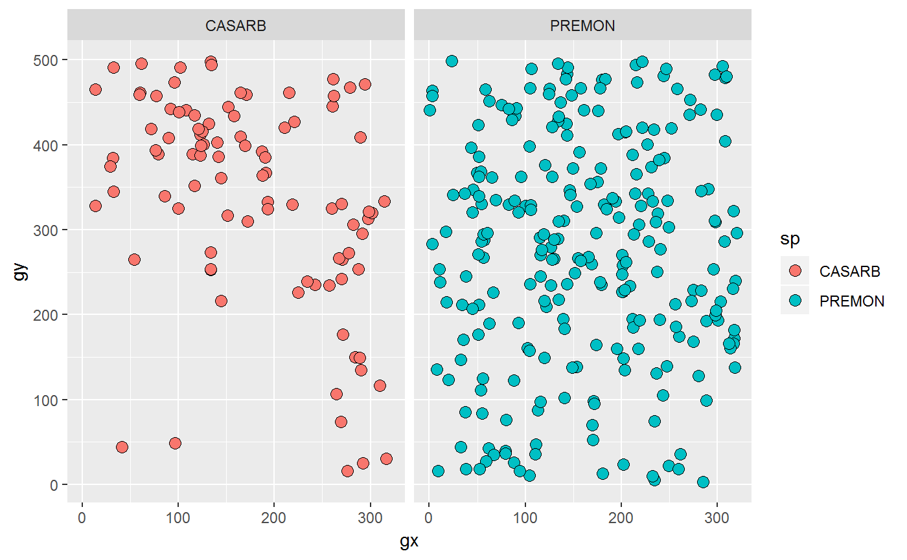

facet(p, facets, ...)
Arguments
| p |
A ggplot. |
| facets |
A set of variables or expressions quoted by vars()
and defining faceting groups on the rows or columns dimension.
The variables can be named (the names are passed to labeller).
For compatibility with the classic interface, can also be a
formula or character vector. Use either a one sided formula, `~a |
| ... |
Arguments passed on to ggplot2::facet_wrap
- facets
A set of variables or expressions quoted by vars()
and defining faceting groups on the rows or columns dimension.
The variables can be named (the names are passed to labeller).
For compatibility with the classic interface, can also be a
formula or character vector. Use either a one sided formula, `~a
- nrow
Number of rows and columns. - ncol
Number of rows and columns. - scales
Should scales be fixed ("fixed", the default),
free ("free"), or free in one dimension ("free_x",
"free_y")? - shrink
If TRUE, will shrink scales to fit output of
statistics, not raw data. If FALSE, will be range of raw data
before statistical summary. - labeller
A function that takes one data frame of labels and
returns a list or data frame of character vectors. Each input
column corresponds to one factor. Thus there will be more than
one with formulae of the type ~cyl + am. Each output
column gets displayed as one separate line in the strip
label. This function should inherit from the "labeller" S3 class
for compatibility with labeller(). See
label_value() for more details and pointers to other
options. - as.table
If TRUE, the default, the facets are laid out like
a table with highest values at the bottom-right. If FALSE, the
facets are laid out like a plot with the highest value at the top-right. - switch
By default, the labels are displayed on the top and
right of the plot. If "x", the top labels will be
displayed to the bottom. If "y", the right-hand side
labels will be displayed to the left. Can also be set to
"both". - drop
If TRUE, the default, all factor levels not used in the
data will automatically be dropped. If FALSE, all factor levels
will be shown, regardless of whether or not they appear in the data. - dir
Direction: either "h" for horizontal, the default, or "v",
for vertical. - strip.position
By default, the labels are displayed on the top of
the plot. Using strip.position it is possible to place the labels on
either of the four sides by setting strip.position = c("top",
"bottom", "left", "right") |
See also
Examples
facet(p, "sp")
# Same
facet(p, ~sp)

facet(p, c("sp", "status"))